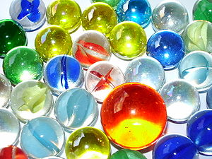
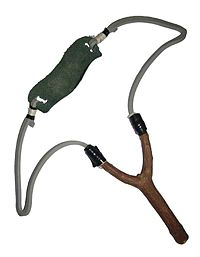

|
|
Folk Arts > Toys
Taiwan's old-fashioned toys: [Note 3]
Generally, Taiwan’s old-fashioned toys vary in different ages. In this part, we are referring to the Taiwanese toys before the digital era. Some of them are traces left by the traditional Chinese culture. Thus, in history studies, we can discover the evidence of impact of Chinese culture on Taiwan by the old-fashioned toys.
Early child age in Taiwan belongs to the agricultural age. Most toys for children were made of natural materials. To people today, these toys contain rich ancient memories.
 |
 |
| Source [Note 3] |
Source [Note 3] |
Toys of the World: [Note 2]
Most ancient toys in the world were made of local natural materials, and were products of originality and ingenuity. We can often discover local product characteristics from toys for children, such as the grass wheelbarrows for African children, and bamboo blowing arrows for Nan Island children. In ancient Rome, there were bells, dolls, and hairballs for babies. In ancient Greece, they had 4 different materials of ball classes for their physical education. In the 8th to 13th century, “moving puppet” was the most surprising toy in Europe. In the 15th to 16th century, kids of nobility already played with spinning tops, rode bamboo horses, played hopscotch, hide-and-seek, and swings. In the Qing Dynasty of China, there was “Multi-Treasure Entertainment Box” made of ivory exporting to Europe to open the trading door for world toys. Today, toys are a worldwide circulating culture and entertainment, and can be used with medical treatment and heath to comfort people’s mind. In the US, some schools use a dancing machine to promote students’ healthy exercise.
Learn About Taiwanese Toys: [Note 1][Note 5]
From the 1940s to 1950s, the agricultural age lacked material wealth and extravagance. Society was simple and full of human kindness; the natural environment was not polluted. At that time, childhoods were very natural and wild. From the 1960s to 1970s, people started to construct big buildings, and the economy started to take off. Taiwan entered a flourishing and blooming industrial stage. Hard work led the Taiwanese to a richer materialistic life, so toys were improved to plastic or metal, made in the industrial age. From the 1990s to 2000s, following the trend of globalization, we entered the information age led by electronic industries. Today’s children can experience multi-media acoustic-optical joy through a computer monitor.
| Local Agricultural Age |
(1) Bamboo dragonfly (2) Slingshot (3) Bamboo gun (4) Bamboo flute (5) Bamboo ring (6) Windmill
(7) Sandbags (8) Shuttlecock (9) Rolling iron hoop (10) Stilt walking (11) Marbles (12) Tangrams |
| Local Industrial Age |
(1) Drawing game (2) Game cards (3) Treasure sword (4) Turning paper flower (5) Color flap
(6) Top (7) Ground cattle (8) Bolang Drum (9) Bamboo cicada (10) Art scope (11) Sun moon ball (12) Paper roll gun |
| Modern Industrial Age |
(1) Modern plastic toys (2) Modern lantern
(3) Plastic Legos (4) GI Joe (5) Leaping frog
(6) Shooting toys (7) Metal toys (8) Burning metal ship (9) Wound fishing (10) Airplane (11) Flying bird (12) Moto-driven model |
| Modern Electronic Age |
(1) TV games (2) Computer games (3) AI robot
(4) Online games (5) Potable games (6) Electronic pet (7) Moto-driven model (8) Large game machine (9) Virtual reality game (10) Multi-media communication equipment |
Learn About Hakka Toys: [Note 4]
Hakka in the early ages lacked materials, so adults were busy farming, and children had to help with household duties. Therefore, they did not have extra money reserved for toys. Children had to make their own simple toys using resources from their living environment. In general, Hakka toys were primarily made of local materials and could be done by kids. For example, daily resources like bamboo, wood, plastic, discarded metal, and plants were seen the most. Besides, Hakka children often called friends and played group games on the big land.
1. Toys made of wood or bamboo: top, bamboo dragonfly, chopstick gun, and Diabolo.
2. Toys made of iron or metal: Iron rings and stilts made of empty mile powder cans.
3. Toys related to water: water gun and water dart. Learn About Native Toys: [Note 4]
From Saixia, Taiya to other tribal, Xinzhu County bred rich multi-tribal culture. Taoshan Village of Wufong Township, in Xinzhu County, is the center of Wufong Township.
Native children grew up with the forest, so they played with the toys made from natural materials, such as slingshots and bamboo guns. The bamboo chip seen everywhere could quickly turn into a toy.
| Toys Before Japanese Occupancy |
(1) Wrestling toy (2) Top (3) Limonene leaf toy (4) Weaving bowl (5) Grass dart |
| Toys After Japanese Occupancy |
(1) Puzzle (2) Responding game
(3) Hunting game |
| Toys in ROC Age |
(1) Air bamboo gun (2) Tossing bamboo chip (3) Bamboo dragonfly |
Learn About Puzzle Toys: [Note 4]
These contain many scientific theories, and most of these are related to reasoning. Intellectual and quick-witted types were another selection. Sometimes, some problems look very difficult from the outside, but as long as your viewpoint changes and you think about the problem from a new angle, the problem can be resolved. This is the fun part of puzzles.
| Sliding Board: |
The toys of sliding boards have existed for a long time. Most of the bottom parts have some slideable same-shape little boards. These boards have to follow some certain rules to move within a specific range in order to play. This contains the features of encouragement, opening, and easiness to be moved. It is good for family play. |
| Chess: |
Chinese chess was called “Symbol Play”, and existed as early as Bei Zhou. It means a game for symbols, and for two people to play against one another. Besides Chinese chess, Watermelon chess, played like Go, and Kong-ming chess, played like Chinese checkers, are all ancient strategic games. |
| Blocks: |
Blocks were toys used to modify the single plane concept into a toy with a three-dimensional concept. Blocks provide the thinking training of solid geometry. In traditional blocks, there were the three-piece “Sanxing Gui Wei” and six-piece “Luban Lock”. |
| Ring: |
The long development of the ring toy has continued up to today. This is made of metal. The concept of the game has a deep relationship with the changes of space. It builds the resolving fun in the game procedure by using space hinders. |
Reference: (Except the notes, the text and pictures on these pages were based on interview transcriptions, photographs and writing taken by the project team.)
Note1: http://edu.ocac.gov.tw/local/taiwan_toy/toy_list_1_c.htm
Note2: http://www.toymuseum.org.tw/t04/toy_world.html
Note3: http://zh.wikipedia.org/wiki/%E5%8F%B0%E7%............
Note4: http://www.hchcc.gov.tw/ch/toys/PageC1.html
Note5: http://edu.ocac.gov.tw/local/taiwan_toy/intro.htm

|